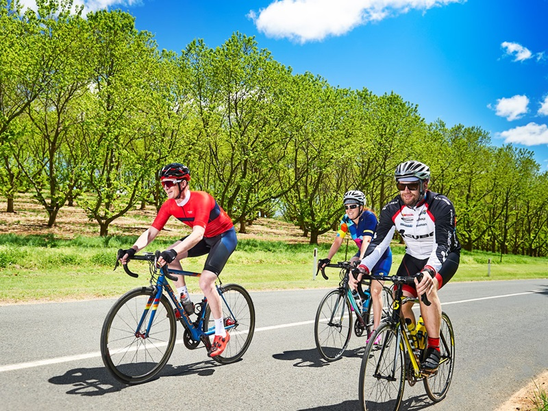

Rider Reviews
Los Robles Trail
by Danny Keys
submitted on 09/17/2019
Home to over 20 miles of trails, this area is a cyclist’s destination that isn’t to be missed when exploring Iowa. Featured among the trails is the North Ridge Trail, opened in North Liberty 1998 and connected to the Coralville Recreational Trail in 1999. The trail begins in the Fox Run subdivision in North Liberty and heads south to Forevergreen Road, connecting to the Coralville Reservoir – Woodpecker Trail, Linder and Squire Points, a 3.6 mile loop trail around the lake near the former capital of Iowa, Iowa City. Home to over 20 miles of trails, this area is a cyclist’s destination that isn’t to be missed when exploring Iowa. Featured among the trails is the North Ridge Trail, opened in North Liberty 1998 and connected to the Coralville Recreational Trail in 1999. The trail begins in the Fox Run subdivision in North Liberty and heads south to Forevergreen Road, connecting to the Coralville Reservoir.Home to over 20 miles of trails, this area is a cyclist’s destination that isn’t to be missed when exploring Iowa. Featured among the trails is the North Ridge Trail, opened in North Liberty 1998 and connected to the Coralville Recreational Trail in 1999. The trail begins in the Fox Run subdivision in North Liberty and heads south to Forevergreen Road, connecting to the Coralville Reservoir.
Need a rental?
MELANIE'S BIKES has you covered!
if you're visiting Southern California and need a bike,
give
us a call for drop off and pick up.